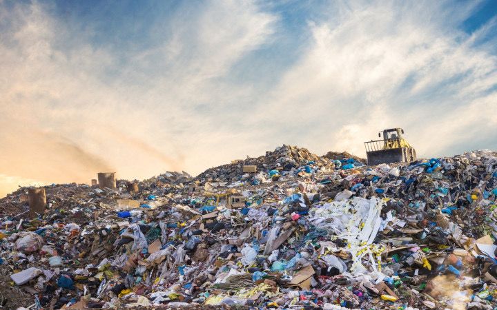

The Reality of Recycling
Recycling is an amazing thing
when it works like we think it does.
However, most times it sin't even
lose to how we think recylcing happens.
Occording to the Smithsonian Ocean,
“out of the millions of tons of plastic
produced each year, only about 5 percent
of it is reclaimed. A large amount of
plastic, about eight million metric
tons every year, ends up in the ocean,
polluting the water and endangering marine
life.” This means for every peice of
trash we think we're recycling,
it is most likely going into the ocean.
This not only endangers our beloved marine
life but also our selves. These effects are
discussed deeper in other pages.

Statistics of Recycling (from The Hill)
- 21% of water and soft drink bottles are recycled.
- 10% of milk jugs and juice bottles are recycled.
- Less than 5% of grocery bags and shrink wrap are recycled.
- Less than 2% of ice cream tubs and coffee pods are recyled.
- Less than 1% of plastic cutlery, lids, and DVD cases are recycled.